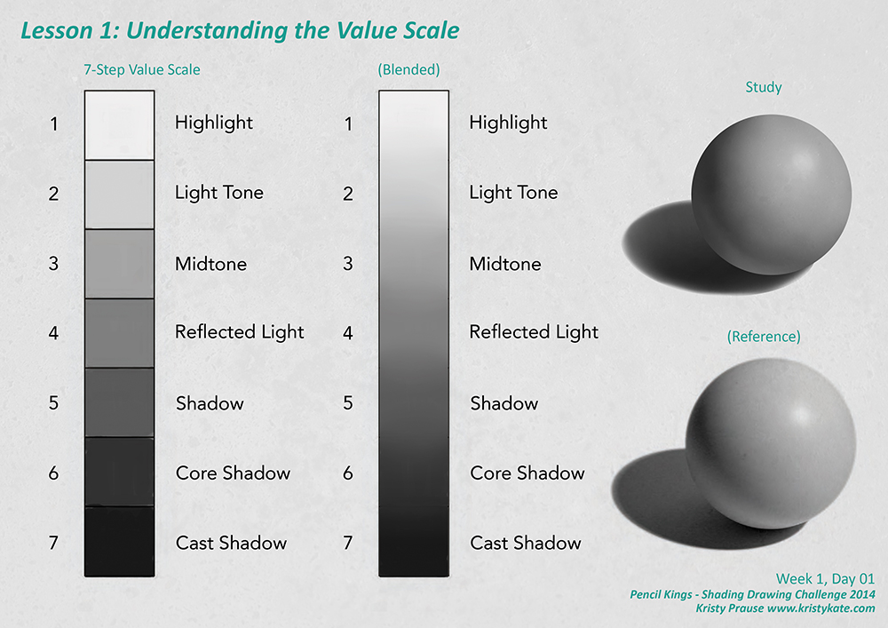
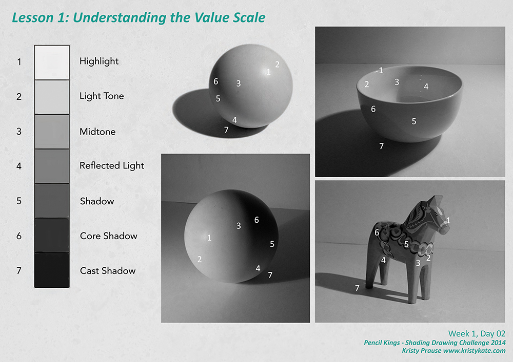

Learning Values with the Shading Drawing Challenge (SDC)
Hi there!
Before we jump into the studies for the week, I want to give a quick heads up that I'm trialing a different approach to the weekly study posts. Instead of naming each post after the week I'm up to (eg. This week would be "Week 24 Studies") and dumping everything from the week in there, I'll be dedicating posts to specific studies and naming them accordingly. Hopefully this small change will make searching older posts a lot less confusing!
Now, onto the studies.
+ + +
Shading Drawing Challenge - Week 1
Last week I started Pencil Kings new 30 day challenge, the Shading Drawing Challenge (SDC). I wasn't entirely sure what to expect - leading up to the new challenge there was a vote for what figure drawing topic we'd like to learn. Shading was probably my least 'favourite' option (I voted for Perspective) but I signed up anyway. If this new challenge is anything like the Figure Drawing Challenge, it's bound to be great!
Value Scales
Week 1 focused on the basics of shading. Simple stuff, but I'm happy for it, as apart from a few of my own value studies and tips I've picked up here and there, I can't say I've really studied or been taught this subject in depth.

Lesson 1: Understanding Values involved creating a 7 Step Value Scale and a blended scale of the 7 values. This is a basic scale, going from (almost) white to black.
Value scales change from image to image depending on the level of lighting. Images with low key lighting contain darker values, while high key lighting have lighter values. With this in mind, it's important to remember that the value range of lighting (highlight, light tone, midtone, reflected light, shadow, core shadow and cast shadow) in an image can expand, contract and move up and down within the full (white to black) value scale to create a particular mood.
It's also worth noting that the values for areas of light and shadow should remain separate. That is, none of the values from the light range (in the image above, 1-3) should be used in the areas of shadow (4-7 on the scale) and vice versa.

After establishing the 7 Step Value Scale, the final exercise was to identify and label the types of lightning, using the supplied reference images.
Here's a quick rundown of what each represents:
- Highlight - The reflection of the light source.
- Light tone - The area of the object that's receiving light from the light source.
- Midtone - The value that sits between light and dark.
- Reflected light - Light that has bounced off other surfaces and lights the shadow area.
- Shadow - Area not receiving any light.
- Core shadow - The darkest area of the shadow, appearing on edges, where the plane turns away from the light.
- Cast shadow - The darkest value, where light is entirely obscured (typically where the object touches a surface).
Well, that about covers everything I learnt from the first two days of SDC. Even if it looks basic and you've studied it before, it's worth going over and completing some value studies to rejog the memory. We all know it can be easy for the foundations to become a little foggy if you haven't practiced them in a while!
Up next, SDC Lesson 2: Blocking in the Shadows.
+ + +
Enjoy art? I'd love to hear from you! Connect with me by leaving a comment or getting in contact via Twitter or Facebook.